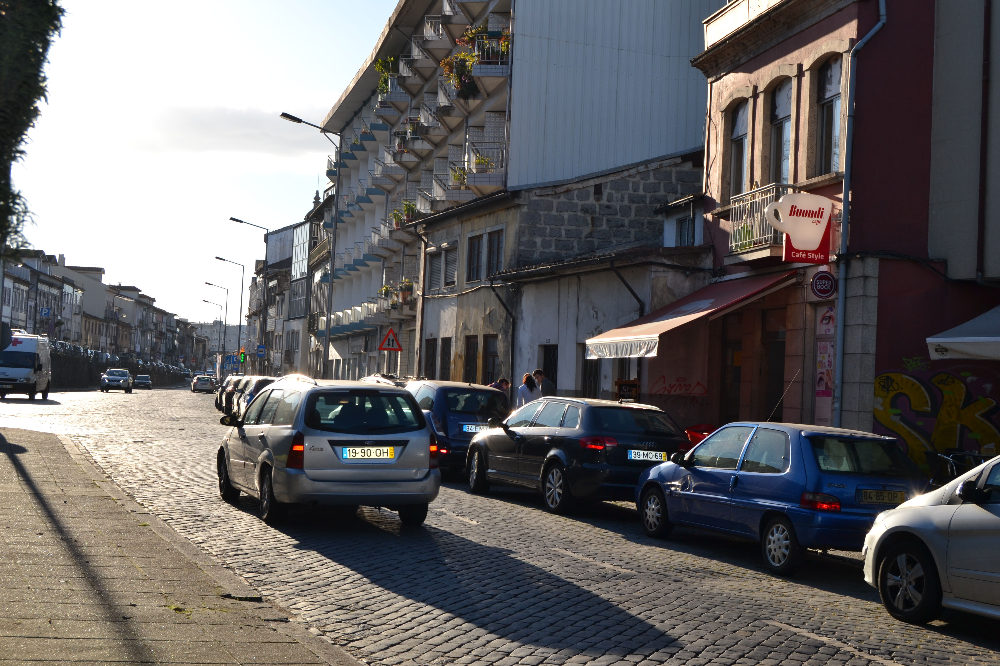

Cangosta da Escoura
Descrição:
Pequena artéria, de carácter rural, estabelecia ligação entre a igreja de S. Vicente e a igreja e convento do Carmo.
Aberta em data que desconhecemos, não está totalmente representada no Mappa; nele só vemos a metade Este, embora de ambos os lados.
Sem casas dignas de relevo, apresenta do lado Sul uma série de portas que davam acesso aos quintais das habitações da rua dos Chãos de Cima. Aliás todo este lado era pertença das casas daquela rua, pois que até os 4 edifícios (n.ºs 8, 24, 27 e 28) nele representados pertenciam, respectivamente, aos seus prazos n.ºs 46, 27, 23 e 22.
Do lado Norte, há apenas 5 pequenas casinhas totalmente ligadas aos campos que as envolviam: assim a casa do prazo n.ºs 30 e 31 andam emprazadas juntamente com o campo n.º 29, e as casas 32, 33 e 35 estavam também todas subemprazadas com os quintais n.º 34 e 36 num só título.
Todas estas casas são foreiras ao cabido.
Desde 14 de Setembro de 1885 que passou a chamar-se rua Gabriel Pereira de Castro. Apesar das placas toponímicas existentes no local competente terem gravado este nome é apenas conhecida como rua da Escoura.
Pertence à casa n.º 9 da Rua das Palhotas, para onde tem frontaria e serventia principais.
Porta de serventia do quintal da casa n.° 52 da Rua dos Chãos de Cima.
Quintal da casa n.º 51 da Rua dos Chãos de Cima.
Porta de serventia da casa n.º 50 da Rua dos Chãos de Cima.
Porta de serventia do quintal da casa n.º 49 da Rua dos Chãos de Cima.
Porta de serventia do quintal da casa n.º 48 da Rua dos Chãos de Cima.
Porta de serventia do quintal da casa n.º 47 da Rua dos Chãos de Cima.
Pertença do n.º 46 da Rua dos Chãos de Cima.
Quintal da casa n.º 45 da Rua dos Chãos de Cima.
Quintal da casa n.º 44 da Rua dos Chãos de Cima.
Quintal da casa n.º 43 da Rua dos Chãos de Cima.
Quintal da casa n.º 42 da Rua dos Chãos de Cima.
Quintal da casa n.º 41 da Rua dos Chãos de Cima.
Quintal da casa n.º 40 da Rua dos Chãos de Cima.
Porta de serventia do quintal da casa n.º 39 da Rua dos Chãos de Cima.
Porta de serventia do quintal da casa n.º 38 da Rua dos Chãos de Cima.
Porta de serventia do quintal da casa n.º 37 da Rua dos Chãos de Cima.
Porta de serventia do quintal da casa n.º 36 da Rua dos Chãos de Cima.
Porta de serventia do quintal da casa n.º 35 da Rua dos Chãos de Cima.
Quintal da casa n.º 34 da Rua dos Chãos de Cima.
Porta de serventia dos quintais das casas n.ºs 32 e 33 da Rua dos Chãos de Cima.
Porta de serventia do quintal da casa n.º 31 da Rua dos Chãos de Cima.
Caminho de serventia das casas n.ºs 28, 29 e 30 da Rua dos Chãos de Cima.
Pertence ao n.º 27 da Rua dos Chãos de Cima.
Porta de serventia da casa n.º 26 da Rua dos Chãos de Cima.
Quintal da casa n.° 25 da Rua dos Chãos de Cima.
Pertence ao n.º 23 da Rua dos Chãos de Cima
Pertence ao n.º 22 da Rua dos Chãos de Cima
Denominado “Campo ou Cortelho da Escoura”. Foi pertença do prazo do casal de Infias antes de 1736.
Pertence ao prazo do Campo ou Cortelho da Escoura.
Pertence ao prazo do Campo ou Cortelho da Escoura.
Pagam foro ao enfiteuta do prazo da 2.ª metade do casal do Lagarto. Os n.º 34 e 36 correspondem a quintais.
Quintal da casa n.° 38.
Pertence à casa n.° 10 da Rua das Palhotas, para onde tem a frontaria principal.
Casas:
| Número | Enfiteuta | Foro | Descrição |
|---|---|---|---|
| 1 | Pertence à casa n.º 9 da Rua das Palhotas, para onde tem frontaria e serventia principais. | ||
| 2 | Porta de serventia do quintal da casa n.° 52 da Rua dos Chãos de Cima. | ||
| 3 | Quintal da casa n.º 51 da Rua dos Chãos de Cima. | ||
| 4 | Porta de serventia da casa n.º 50 da Rua dos Chãos de Cima. | ||
| 5 | Porta de serventia do quintal da casa n.º 49 da Rua dos Chãos de Cima. | ||
| 6 | Porta de serventia do quintal da casa n.º 48 da Rua dos Chãos de Cima. | ||
| 7 | Porta de serventia do quintal da casa n.º 47 da Rua dos Chãos de Cima. | ||
| 8 | Pertença do n.º 46 da Rua dos Chãos de Cima. | ||
| 9 | Quintal da casa n.º 45 da Rua dos Chãos de Cima. | ||
| 10 | Quintal da casa n.º 44 da Rua dos Chãos de Cima. | ||
| 11 | Quintal da casa n.º 43 da Rua dos Chãos de Cima. | ||
| 12 | Quintal da casa n.º 42 da Rua dos Chãos de Cima. | ||
| 13 | Quintal da casa n.º 41 da Rua dos Chãos de Cima. | ||
| 14 | Quintal da casa n.º 40 da Rua dos Chãos de Cima. | ||
| 15 | Porta de serventia do quintal da casa n.º 39 da Rua dos Chãos de Cima. | ||
| 16 | Porta de serventia do quintal da casa n.º 38 da Rua dos Chãos de Cima. | ||
| 17 | Porta de serventia do quintal da casa n.º 37 da Rua dos Chãos de Cima. | ||
| 18 | Porta de serventia do quintal da casa n.º 36 da Rua dos Chãos de Cima. | ||
| 19 | Porta de serventia do quintal da casa n.º 35 da Rua dos Chãos de Cima. | ||
| 20 | Quintal da casa n.º 34 da Rua dos Chãos de Cima. | ||
| 21 | Porta de serventia dos quintais das casas n.ºs 32 e 33 da Rua dos Chãos de Cima. | ||
| 22 | Porta de serventia do quintal da casa n.º 31 da Rua dos Chãos de Cima. | ||
| 23 | Caminho de serventia das casas n.ºs 28, 29 e 30 da Rua dos Chãos de Cima. | ||
| 24 | Pertence ao n.º 27 da Rua dos Chãos de Cima. | ||
| 25 | Porta de serventia da casa n.º 26 da Rua dos Chãos de Cima. | ||
| 26 | Quintal da casa n.° 25 da Rua dos Chãos de Cima. | ||
| 27 | Pertence ao n.º 23 da Rua dos Chãos de Cima | ||
| 28 | Pertence ao n.º 22 da Rua dos Chãos de Cima | ||
| 29 | Pedro Francisco Rodrigues, da rua dos Chãos de Cima, c.c. Maria de Matos Vieira | 100 reis e 1 alqueire de trigo | Denominado “Campo ou Cortelho da Escoura”. Foi pertença do prazo do casal de Infias antes de 1736. |
| 30 | Pertence ao prazo do Campo ou Cortelho da Escoura. | ||
| 31 | Pertence ao prazo do Campo ou Cortelho da Escoura. | ||
| 32 a 36 | Isabel Maria da Silva, viúva do Dr. Santos de Araújo Alves, enfiteuta principal do prazo da 1.ª metade do casal do Lagarto. | Pagam foro ao enfiteuta do prazo da 2.ª metade do casal do Lagarto. Os n.º 34 e 36 correspondem a quintais. | |
| 37 | Quintal da casa n.° 38. | ||
| 38 | Pertence à casa n.° 10 da Rua das Palhotas, para onde tem a frontaria principal. |
Imagens:


Fotos atuais da rua:
